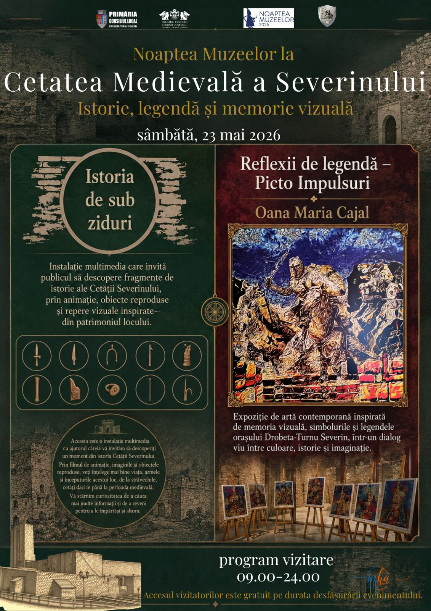

Noaptea Muzeelor 2026 ajunge mâine la Drobeta-Turnu Severin cu un program bogat și variat, desfășurat simultan în două dintre cele mai emblematice obiective ale orașului: Castelul de Apă și Cetatea Medievală a Severinului. Evenimentul este organizat de Primăria și Consiliul Local Drobeta-Turnu Severin împreună cu Palatul Culturii „Teodor Costescu", cu acces liber pentru toți vizitatorii pe toată durata desfășurării.
Noaptea Muzeelor este un eveniment cultural european, celebrat anual în a treia sâmbătă a lunii mai, prin care instituțiile culturale și-deschid porțile gratuit până la ore târzii, invitând publicul să (re)descopere patrimoniul local într-un context festiv și accesibil tuturor.
Castelul de Apă — Expoziții și panoramă de la etajul 4
Foto: Afișul oficial
Iconicul Castel de Apă din Drobeta-Turnu Severin — unul dintre cele mai fotografiate monumente ale orașului — va găzdui trei expoziții distincte, fiecare aducând o perspectivă unică asupra istoriei și culturii locale:
🏭 Program Castelul de Apă — 23 mai 2026, 09:00–24:00
- Expoziția Ada Kaleh — dedicată insulei dispărute, cu povești și imagini din trecutul legendar al Dunării
- Expoziția „Mașini care au scris istorie" — colecție privată prezentată de colecționarul Iulia Damșescu, un tur inedit prin istoria automobilului
- Expoziție de pictură „Dunărea în Mehedinți" — lucrări semnate de artistul plastic Mircea Popescu, o oda vizuală adusă fluviului și peisajelor mehedințene
- Panorama orașului de la etajul 4 – balcon — priveliștea spectaculoasă a Drobetei văzute de sus, mai ales impresionantă la apus și în nocturnă
Castelul de Apă din Drobeta-Turnu Severin este o capodoperă arhitecturală construită la începutul secolului XX. Cu turnul său impunător vizibil din tot orașul, este unul dintre simbolurile identitare ale Mehedinților.
Cetatea Medievală a Severinului — Istorie, legendă și memorie vizuală

Foto: Afișul oficial
Al doilea obiectiv al Nopții Muzeelor la Drobeta este Cetatea Medievală a Severinului, care propune publicului o călătorie în timp sub deviza „Istorie, legendă și memorie vizuală". Programul din acest an combină tehnologia cu arta, pentru o experiență cu adevărat deosebită:
🏛 Program Cetatea Medievală — 23 mai 2026, 09:00–24:00
- „Istoria de sub ziduri" — instalație multimedia interactivă care invită publicul să descopere fragmente din istoria Cetății Severinului prin animație, obiecte reproduse și repere vizuale inspirate din patrimoniul local, de la cetățile dacice până în Evul Mediu
- „Reflexii de legendă – Picto Impulsuri" — expoziție de artă contemporană semnată de artista Oana Maria Cajal, inspirată de memoria vizuală, simbolurile și legendele orașului Drobeta-Turnu Severin, într-un dialog viu între culoare, istorie și imaginație
Instalația multimedia „Istoria de sub ziduri" este gândită ca o poartă spre trecutul acestui loc unic: prin filmul de animație și obiectele reproduse, vizitatorii pot înțelege mai bine viața, armele și începuturile cetății, de la perioada dacică până la cea medievală.
Informații practice — Noaptea Muzeelor 2026 Drobeta-Turnu Severin
📅 Tot ce trebuie să știi
- Data: sâmbătă, 23 mai 2026
- Program: 09:00 – 24:00 (ambele obiective)
- Locații: Castelul de Apă și Cetatea Medievală a Severinului
- Acces: GRATUIT pe toată durata evenimentului
- Organizatori: Primăria DTS, Palatul Culturii „Teodor Costescu"
Evenimentul este o oportunitate excelentă pentru familii, elevi, turiști și iubitorii de cultură să petreacă o zi — sau o seară — altfel, în mijlocul istoriei și artei Mehedinților. Nu ratați Noaptea Muzeelor 2026 la Drobeta-Turnu Severin!
Sursa: Afișele oficiale ale evenimentului / Redactia MehedintiAzi.ro